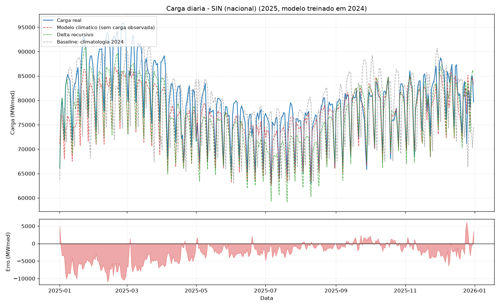

Projeto em destaque
Previsão de Carga de Energia por Região e do SIN
Modelo de Machine Learning que prevê a carga diária de energia dos subsistemas do SIN a partir de clima, calendário e consumo industrial — com teste automatizado que prova que a previsão não recicla a carga observada.
96,2%acurácia no SIN
+41,2%vs. baseline
96testes na CI
Python
XGBoost
Streamlit
Pytest